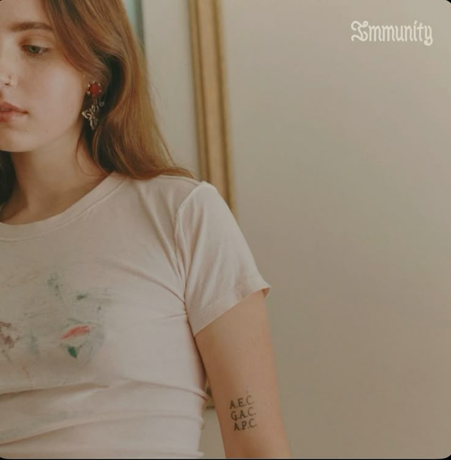

Bags
Clairo
AlbumImmunity
ReleasedMay 24, 2019
GenreIndie Pop
Length4:20
"Bags" is the lead single from Clairo's debut studio album, Immunity. The song is widely considered her breakthrough into the indie-rock scene, moving away from her "bedroom pop" roots into a more polished, guitar-driven sound.
"Can you see me? I’m waiting for the right time
I can’t read you, but if you want, the pleasure’s all mine"
I can’t read you, but if you want, the pleasure’s all mine"
To me, this song captures the anxiety and vulnerability of being honest with someone you care about. It’s about the fear of rejection and the "bags" we carry—the emotional weight of past experiences and current uncertainties. The steady drumbeat and the simple piano melody create a sense of moving forward even when you're scared.